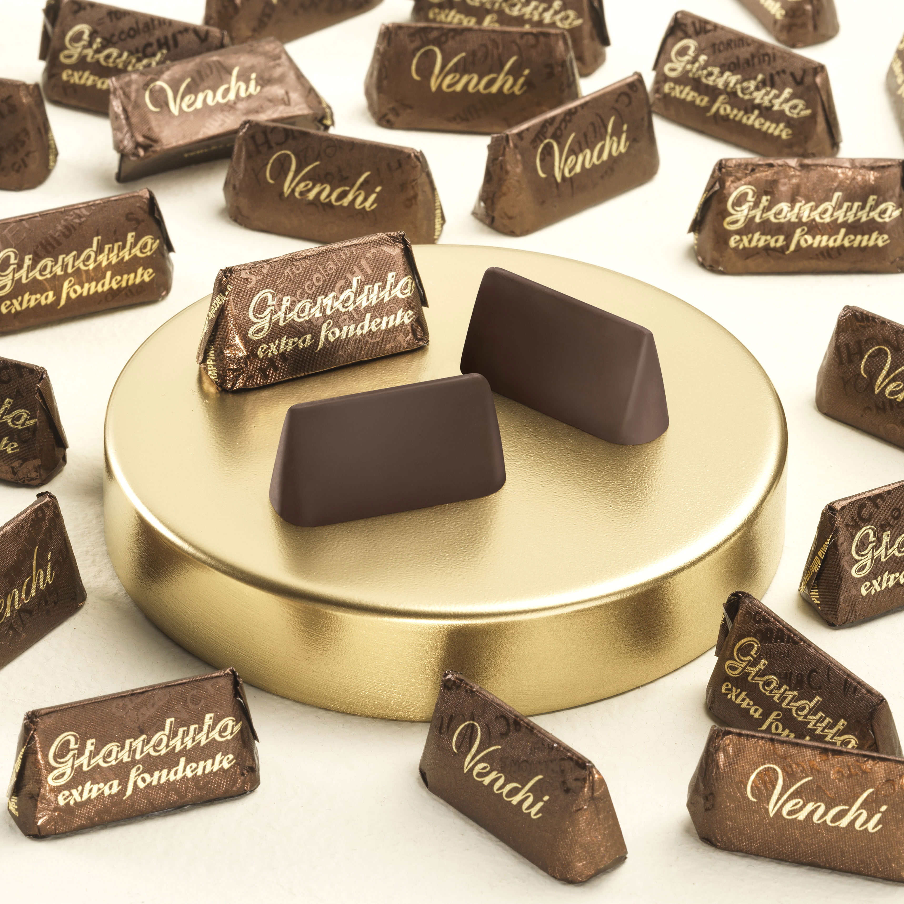
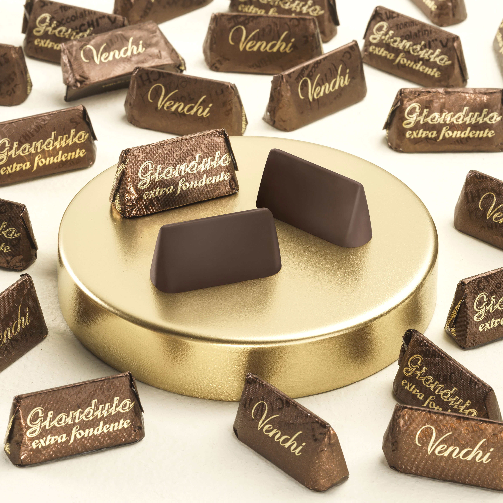

Favorites
I love to travel and explore new things, places, food, meet new people, and gain new knowledge.
My favorite sports are volleyball, tennis, yoga, hiking, and swimming.
My favorite foods include tiramisu, lasagna, steak (medium well), chicken madiera, really good vanilla ice cream(Tillamook) and really good dark chocolate(Venchi).

 

Music
I like all sorts of music, from almost any genre (excluding most rap and country, with few exceptions).I especially like classical music. Some of my favorite artists include:
- Maneskin
- Chopin
- Jhariah
- Ethan Bortnick
- Queen
- Michael Jackson
- Modern Talking
- Tchaikovsky
Credit: Carlos Gardel Link to the artist's page